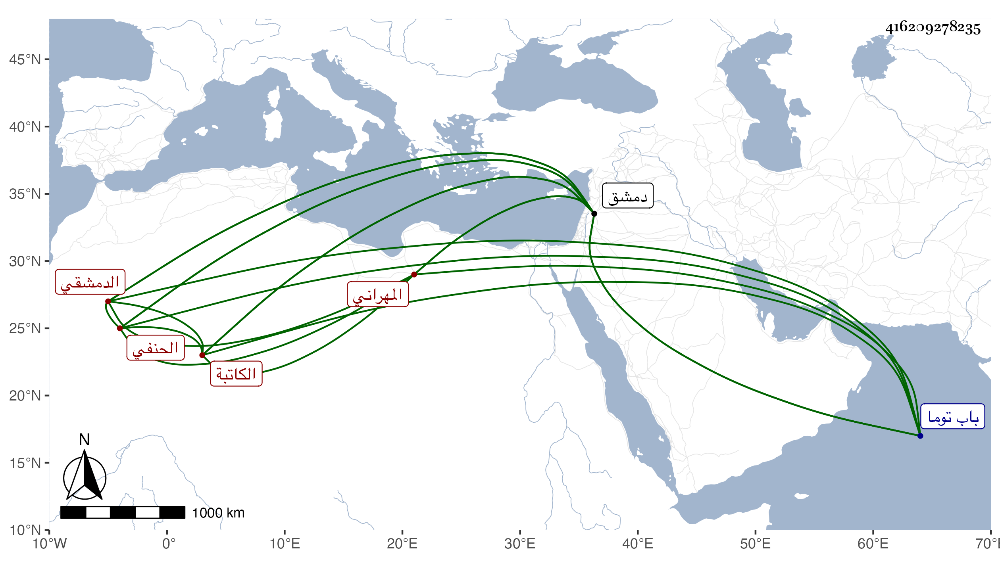

0902Sakhawi.DawLamic.ITO20230111-ara1.EIS1600.416209278235
Biography ID: 416209278235
32
أسماء ابنة عبد الله بن محمد وفي موضع بدله حسن بن أبي بكر الكاتبة أم الحسن ابنة الجمال المهراني الدمشقي الحنفي والدة حسن الماضي . أسمعت في سنة أربع وتسعين على الكمال محمد بن محمد بن نصر الله بن النحاس والشهاب أحمد بن عبد الغالب بن محمد الماكسيني رواية الآباء عن الأبناء للخطيب بفوت ، وأجاز لها في استدعاء مؤرخ بذي القعدة سنة تسع وثمانين ستة وعشرون شيخا منهم رسلان الذهبي وأبو بكر بن محمد المزي ومحمد بن أحمد بن عبد الرحمن بن خطيب المزة ومحمد بن محمد بن داود بن حمزة ومحمد بن محمد بن عبد الله بن عمر بن عوض ، خرج لها الشهاب بن اللبودي مشيخة ماتت قبل اكمالها والخيضري عن ثمانية عشر من شيوخها ثلاثين حديثا وحدثت بها وبرواية الآباء غير مرة لقيتها بدمشق فقرأت عليها بعضه ، وكانت صالحة خيرة كاتبة انفردت بجماعة وماتت في صفر سنة سبع وستين بدمشق ودفنت بمقبرة باب توما بالقرب من تربة الشيخ رسلان رحمها الله .
